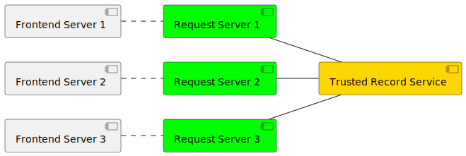
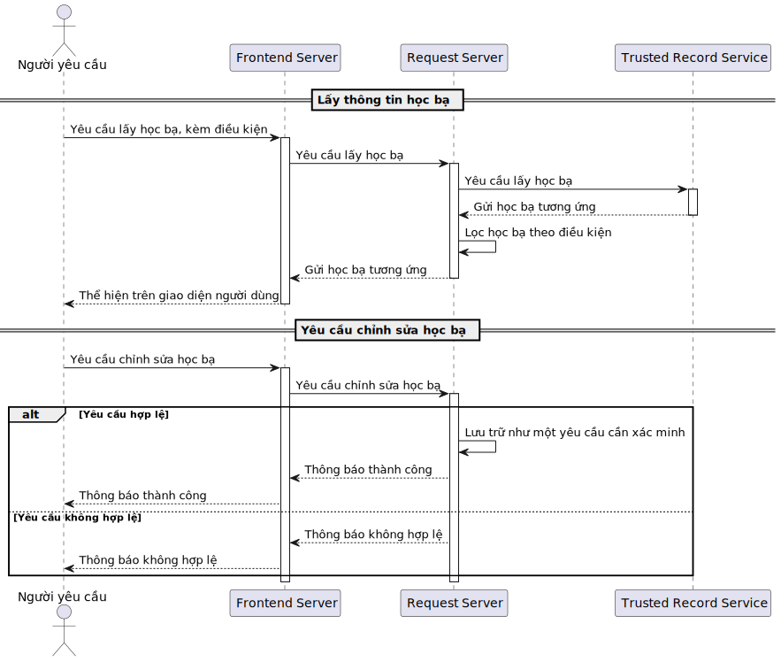
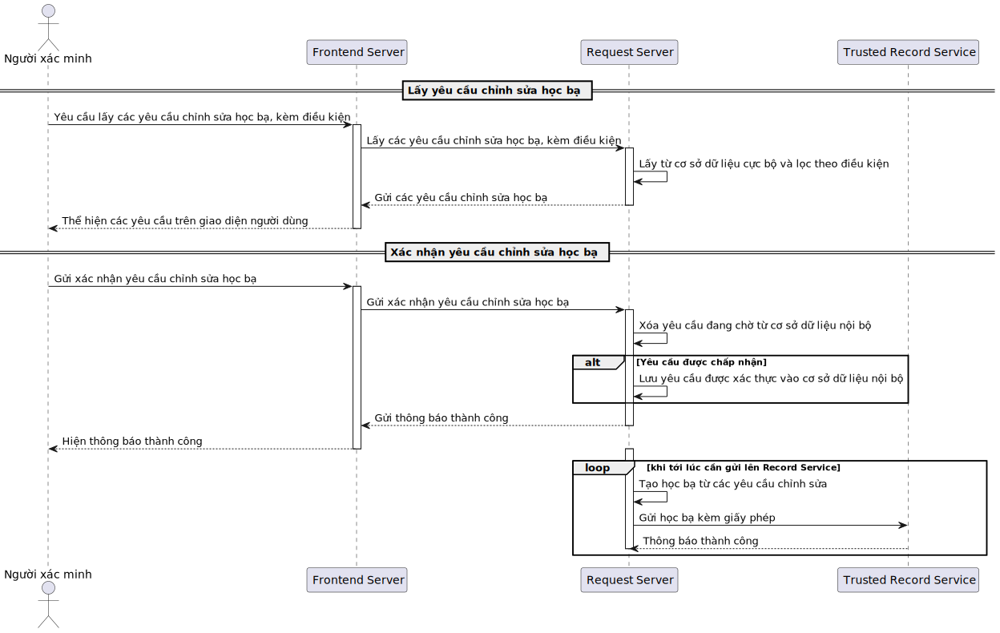
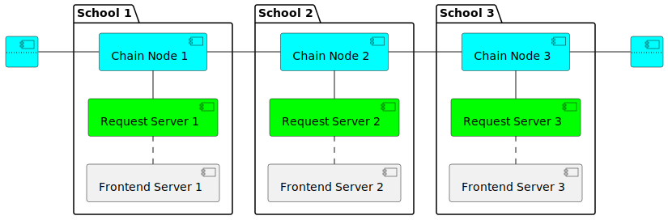
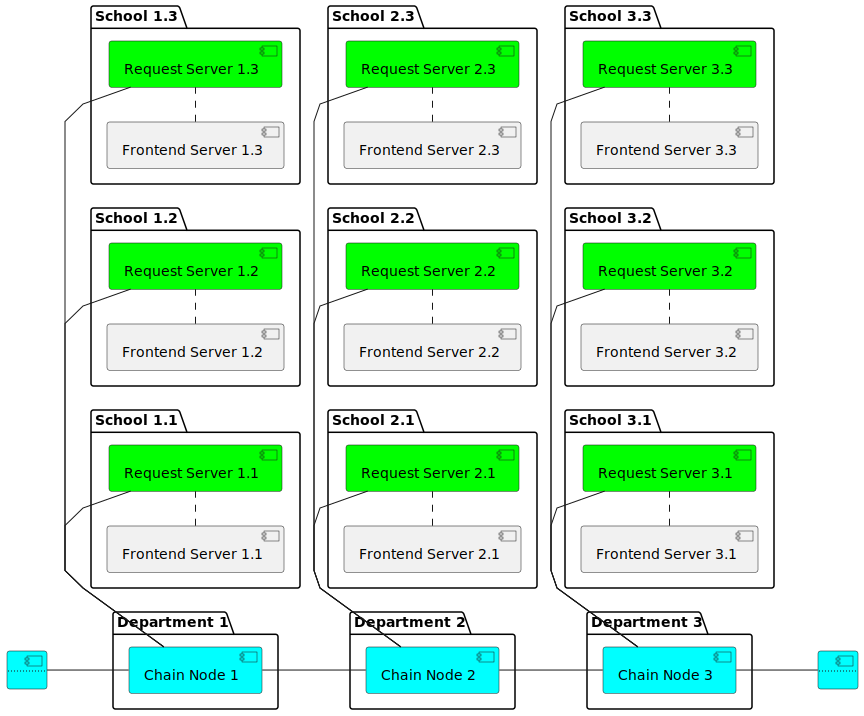

5 Design Article (VI)
Bước đầu thực hiện số hóa hoàn toàn học bạ ở Việt Nam
5.1 Giới thiệu
Hiện nay công nghệ đang phát triển. Ngành giáo dục Việt Nam cũng đã chuyển đổi số rất nhiều bộ phận như áp dụng công nghệ trong giảng dạy cho giáo viên, trang thông tin liên lạc trực tuyến giữa nhà trường và phụ huynh, hình thức học trực tuyến, etc. Tuy nhiên, trong khi đang phát triển công nghệ ở nhiều mặt trong ngành và cố gắng giảm bớt gánh nặng với các công việc ngoài lề cho giáo viên thì vẫn có nhiều vấn đề khi cố gắng áp dụng công nghệ vào một số bộ phận. Một trong số đó là vấn đề về học bạ và số hóa học bạ.
Học bạ là một sổ theo dõi quá trình học tập của học sinh. Nó chứa thông tin sơ lược về lí lịch, quá trình và kết quả học tập từng năm, đồng thời có lời nhận xét và chữ kí của giáo viên chủ nhiệm của từng năm. Việc ghi học bạ hiện nay ở Việt Nam sử dụng học bạ giấy, theo một quy trình chặt chẽ, có tính pháp lí để đảm bảo tính trung thực và nghiêm minh khi đánh giá. Sơ lược thì sau mỗi học kì, giáo viên chủ nhiệm sẽ thu thập điểm số tổng kết của từng môn học từ các giáo viên bộ môn, sau đó ghi vào học bạ của từng học sinh, đồng thời ghi nhận xét và kí tên. Nhưng có bất cập với học bạ giấy như việc giáo viên phải ghi đúng điểm của từng học sinh, học bạ có thể bị mất, etc.
Hiện nay đã có một số địa phương đang số hóa học bạ, hay còn được gọi là áp dụng học bạ điện tử. Nhưng việc triển khai không đồng bộ, nửa vời đã làm tăng khối lượng công việc ngoài của giáo viên lên gấp đôi, khi họ vừa phải ghi thông tin lên học bạ giấy, vừa phải nhập thông tin đó lên hệ thống học bạ điện tử của trường. Ngoài ra còn có một số vấn đề về tính minh bạch, trung thực và độ an toàn của dữ liệu trên các hệ thống đó.
Bài báo này được đăng lên để phân tích những bất cập trong các hệ thống học bạ điện tử hiện nay, đồng thời đề xuất giải pháp để bước đầu thực hiện số hóa hoàn toàn học bạ ở Việt Nam.
5.2 Về các hệ thống hiện tại
5.3 Giải pháp & Thiết kế
5.3.1 Hệ thống cơ bản

Figure 5.1 là sơ lược về hệ thống được đề xuất, bao gồm:
Trusted Record Service (Trung tâm lưu trữ học bạ)
Đây là trung tâm của hệ thống, nơi sẽ lưu trữ các học bạ đã được xác minh bởi các trường, và lịch sử chỉnh sửa của từng học bạ. Trung tâm này phải được sự tin tưởng của các thành viên tham gia hệ thống.
Chỉ có các trường tham gia vào hệ thống mới có thể truy cập vào trung tâm để lấy học bạ, và chỉ có trường liên kết với học bạ đó mới được quyền lấy thông tin lí lịch và gửi yêu cầu cập nhật chỉnh sửa học bạ đó.
Request Server (Máy chủ tiếp nhận yêu cầu)
Mỗi trường trong hệ thống sẽ được phát một máy chủ để thao tác trên Trusted Record Service, trong đó có giấy phép của bên Trusted Record Service cho biết định danh của trường và các quyền trong Trusted Record Service.
Đây cũng là nơi lưu các bản học bạ đang được chỉnh sửa và xử lí các yêu cầu chỉnh sửa từ người dùng (giáo viên, học sinh), bao gồm xác minh tính hợp lệ và tính chính xác của yêu cầu chỉnh sửa đó, tạo một bản học bạ hoàn chỉnh từ các yêu cầu hợp lệ để gửi lên Trusted Record Service kèm với giấy phép được nhận từ Trusted Record Service.
Mỗi trường sẽ có cách xác minh yêu cầu chỉnh sửa học bạ riêng, tùy đặc thù mỗi trường mà Request Server của trường đó sẽ khác, tuy nhiên phần thao tác trên Trusted Record Service là giống nhau vì phải gửi học bạ đã xác minh kèm với giấy phép của trường đó.
Frontend Server (Giao diện tương tác)
Đây là phần phụ trợ cho Request Server để lấy, hiện các học bạ và gửi yêu cầu chỉnh sửa học bạ trên một giao diện dễ nhìn, dễ tương tác. Nó có thể là một phần trong trang quản lý của từng trường.
Với việc Request Server của mỗi trường có thể khác nhau, giao diện của Frontend Server ở mỗi trường cũng sẽ khác nhau để thích ứng với đặc thù của từng trường.
Quy trình tương tác với hệ thống được thể hiện trong Figure 5.2


Trong đó “Người yêu cầu” là học sinh hoặc giáo viên, và “Người xác minh” là giáo viên chủ nhiệm đại diện chính cho học bạ được yêu cầu chỉnh sửa trong Request Server
5.3.2 Áp dụng công nghệ dữ liệu phân tán

Ta có thể mở rộng hệ thống bằng cách áp dụng công nghệ dữ liệu phân tán. Cụ thể, ta có thể tách Trusted Record Service thành các Chain Node và để các Chain Node cho các trường (School) như Figure 5.3. Lúc này một Chain Node nhận yêu cầu chỉnh sửa học bạ từ Request Server sẽ không chỉ lưu trữ trên Chain Node đó mà còn sẽ gửi yêu cầu đó sang các Chain Node lân cận để cùng lưu trữ.
Cấp độ này thường được sử dụng ở hệ thống các trường tư nhân mà không theo các quy trình của các trường chính quy theo Bộ Giáo Dục, nên quyền hạn của các trường là tương đương nhau.
Hệ thống ở cấp độ này sẽ đảm bảo độ an toàn của dữ liệu học bạ trong trường hợp một Chain Node của một trường bị sập. Khi đó, ta có thể dùng giấy phép từ Request Server lên các Chain Node lân cận để lấy các dữ liệu khôi phục lại Chain Node đã sập. Tuy nhiên có bất lợi là mỗi Chain Node sẽ phải lưu một lượng lớn dữ liệu học bạ từ không chỉ chính trường giữ Chain Node đó mà còn các dữ liệu của các Chain Node lân cận.
5.3.3 Lên quy mô liên sở
Ta có thể lên cấp độ của hệ thống lên quy mô liên sở, khi đó từng Chain Node sẽ do từng sở giáo dục duy trì như Figure 5.4.

Ở hệ thống này thì Chain Node sẽ do một bên được các sở tin tưởng (thường là Bộ Giáo Dục) để điều hành và thực hiện việc cài đặt Chain Node và chính các sở đó sẽ cấp giấy phép thao tác trên Chain Node cho các Request Server của các trường thuộc sở đó.
Hệ thống ở cấp độ này có thể được áp dụng ở các trường chính quy, khi việc cập nhật học bạ theo một quy trình chặt chẽ từ các sở cho đến trường. Đây cũng là hệ thống được tin cậy nhất để có thể sử dụng cho việc xét tuyển lên các trường trên theo hình thức trực tuyến vì học bạ ở cấp độ này được cả trường và sở giáo dục liên quan đảm bảo.